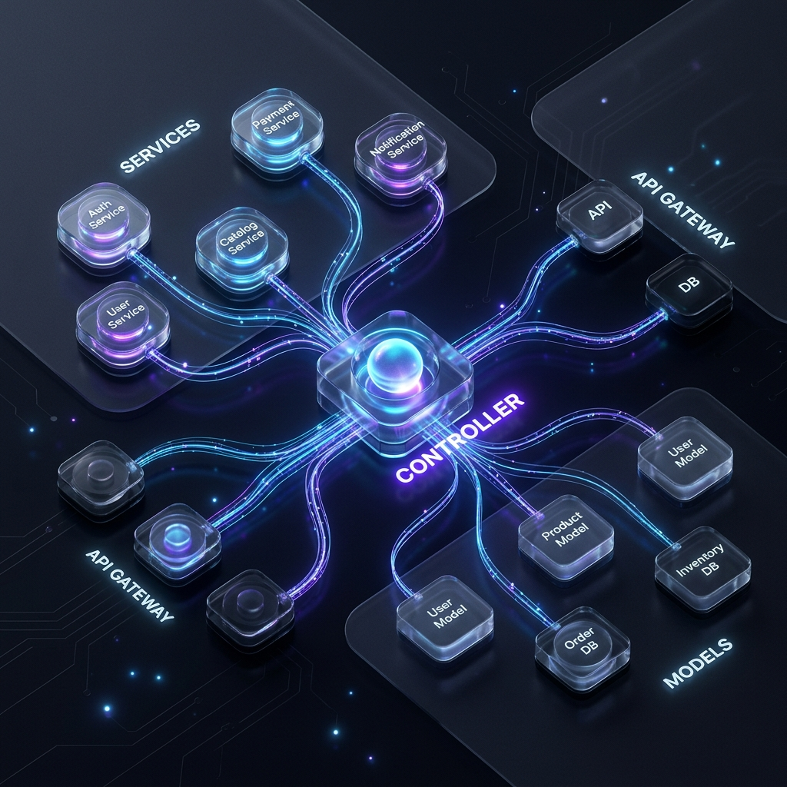
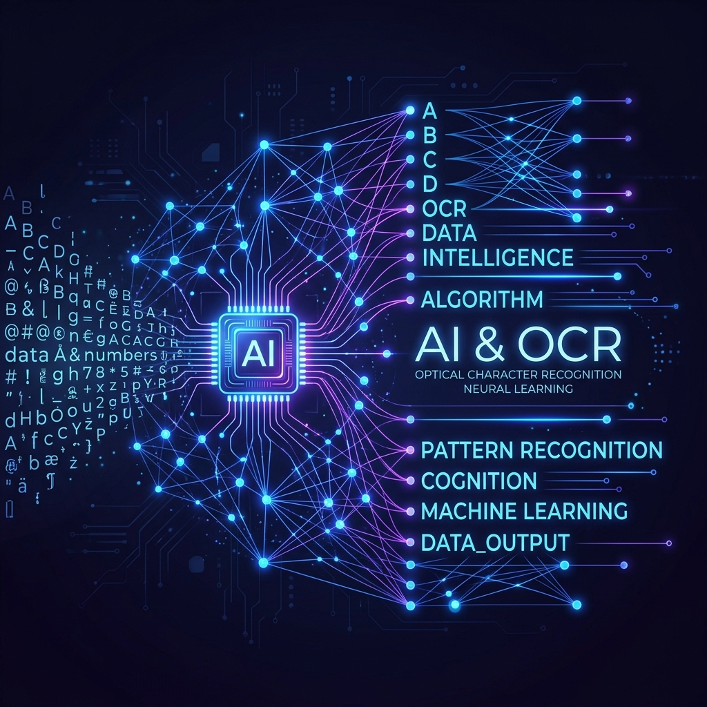

Olá, sou Erik Henning.
Desenvolvedor Full Stack & Especialista em Inteligência Artificial focado na construção de sistemas inteligentes e escaláveis.
Sobre Mim
Tenho experiência prática em todas as camadas da arquitetura moderna de software: desde frontends responsivos até backends robustos e pipelines de IA de ponta.
🔧 Expertise Técnico:
- Backend & APIs — Desenvolvimento com Python (FastAPI, Django, Flask) e Node.js (Fastify, NestJS). Arquitetura RESTful, real-time (Socket.IO), autenticação segura, middleware customizado, ORMs (SQLAlchemy, Django ORM, TypeORM).
- Engenharia de IA — Especialista em frameworks modernos de agentes: CrewAI (orquestração de múltiplos agentes), LangGraph (workflows estruturados), LangChain (prompt engineering e RAG), PydanticAI (respostas tipadas). Integração com OpenAI, Gemini e modelos LLM.
- Frontend — React com Vite, TailwindCSS e bibliotecas de componentes (Radix UI). Interface intuitivas e performáticas.
- Integração de Sistemas — Experiência em integração complexa com SAP Commerce e VTEX, processamento de eventos webhook, transformação de dados multi-fonte.
- Infraestrutura & DevOps — Docker, Docker Compose, GCP (Cloud Run), CI/CD (CloudBuild), PostgreSQL e SQL Server.
Habilidades
Backend & APIs
- Python (FastAPI, Django, Flask)
- Node.js (Fastify, NestJS)
- ORMs (SQLAlchemy, TypeORM, Django ORM)
- APIs RESTful & WebSockets (Socket.IO)
Engenharia de IA
- Frameworks (CrewAI, LangGraph, LangChain)
- Modelos LLMs (OpenAI, Gemini)
- RAG & Prompt Engineering
- PydanticAI para respostas tipadas
Frontend
- React & Vite
- TailwindCSS
- Bibliotecas de Componentes (Radix UI)
Integração de Sistemas
- SAP Commerce & VTEX
- Processamento de Webhooks
- Apache Airflow & Transformação de Dados
Infra & Bancos de Dados
- GCP (Cloud Run) & CI/CD (CloudBuild)
- Docker & Docker Compose
- PostgreSQL & SQL Server
Projetos em Destaque

Microserviço Extrator de NF (Arquitetura em Camadas)
Microserviço escalável para extração e estruturação de dados de Notas Fiscais usando OCR e IA. O grande diferencial deste projeto é a aplicação rigorosa de Arquitetura em Camadas. A camada de Controllers atua como o maestro perfeito: recebe as requisições HTTP e orquestra o fluxo de forma limpa entre os serviços (Cache, OCR, AI Extraction), garantindo separação de responsabilidades, código altamente testável e manutenível.
Ver no GitHubConstrução de Agentes com CrewAI, LangGraph e Pydantic
Desenvolvimento de 3 agentes de IA usando abordagens diferentes para comparar como cada um constrói o raciocínio. Avaliação de estruturas baseadas em schema (Pydantic), fluxos de execução (LangGraph) e orquestração por papéis (CrewAI) para análises consistentes de métricas como LTV, CAC e ROI.
Ver no GitHub
Fullstack OCR Image Project
Projeto full stack de Reconhecimento Óptico de Caracteres (OCR). Processamento de imagens para extração automática e estruturação de textos utilizando modelos de Inteligência Artificial (IA). Conta com backend robusto para orquestração das análises por IA, persistência de dados para armazenamento do histórico e interface de usuário intuitiva para visualização dos resultados.
Ver no GitHub